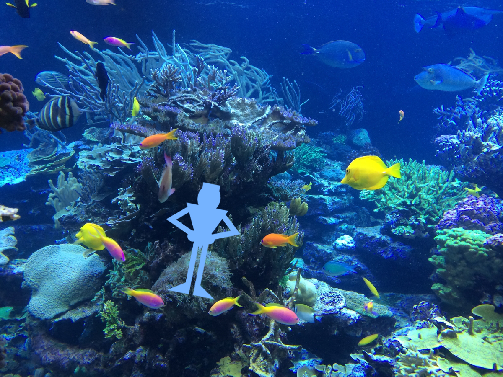

Once Jordan finds an underwater cave after swimming for 15 minutes, he ventures inside. Inside the cave there are many shiny rocks with light from the surface reflecting off of them. Jordan sees many exotic fish that he’s never seen before. He swims around the cave in awe.
Credits: Photo made by Matthew Peralta, sound from https://www.bensound.com/royalty-free-music/track/sci-fi, undertwater image by https://www.rawpixel.com/image/6030355/photo-image-public-domain-blue-nature